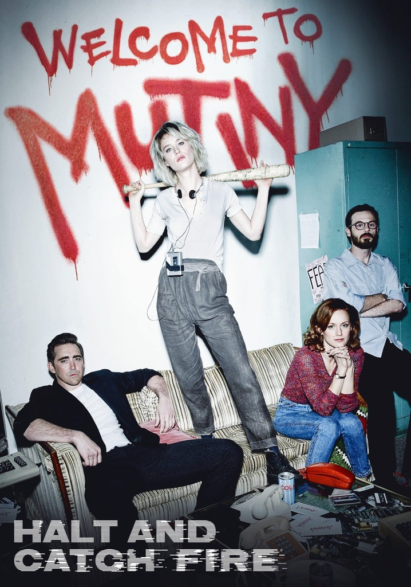

Un vistazo a cada episodio de la segunda temporada.

La segunda temporada sigue a Cameron y Donna mientras lanzan Mutiny, una de las primeras comunidades en línea. La temporada se adentra en el mundo de las startups, los juegos en línea y los desafíos de monetizar una plataforma digital, mientras Joe y Gordon exploran nuevos horizontes.